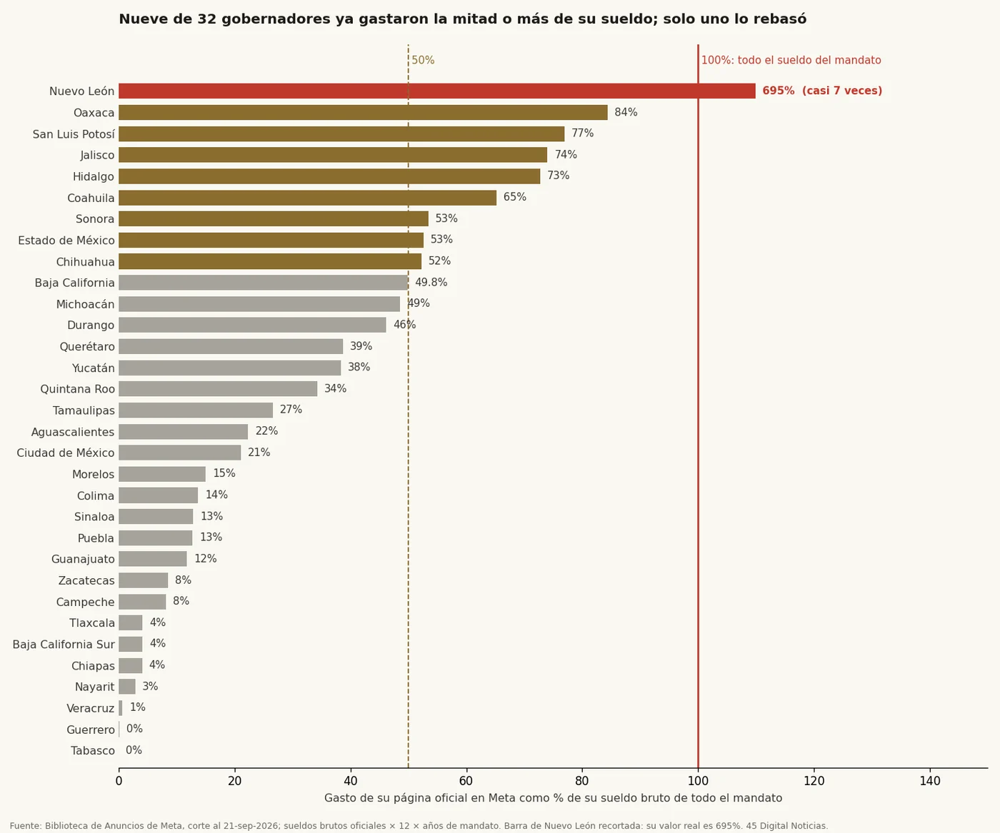
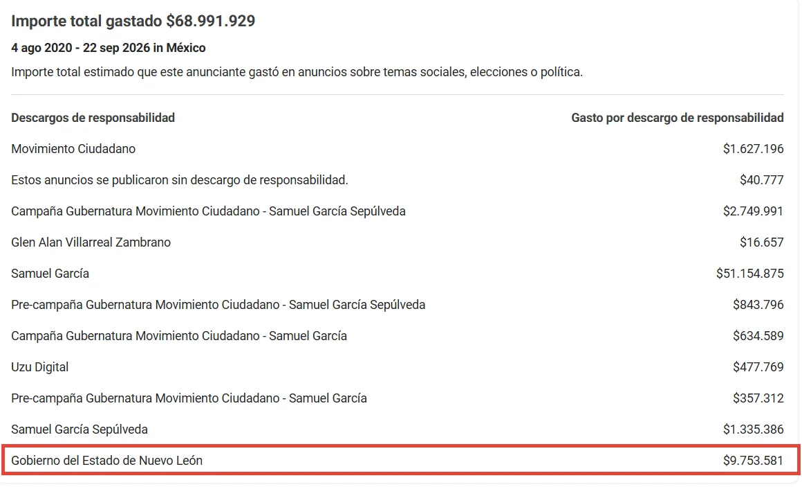
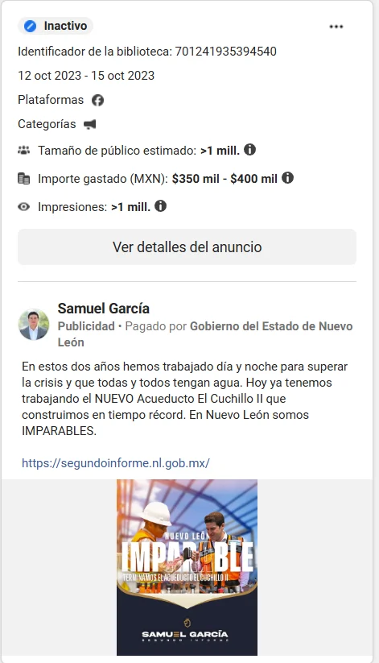
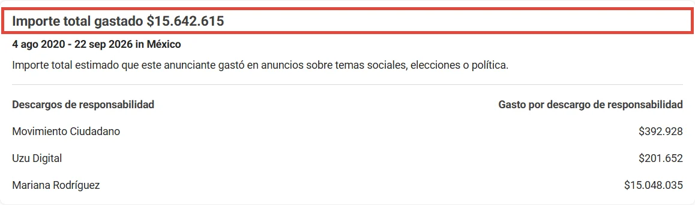
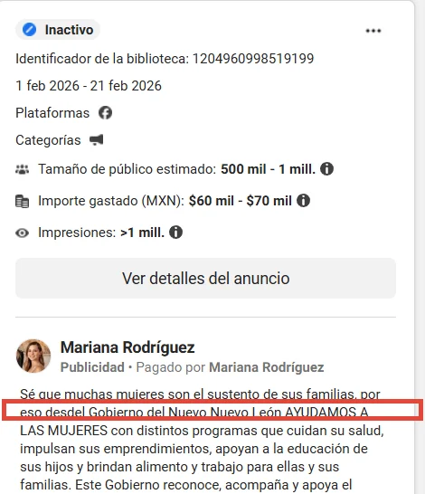
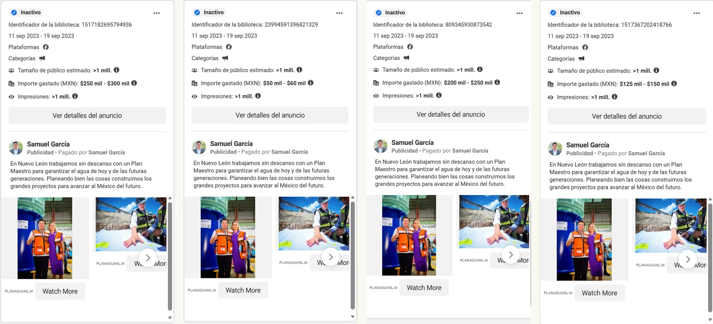

Siete veces el sueldo
El gobernador de Nuevo León, Samuel García, ha gastado $68,967,891 en publicidad de Meta desde 2020: casi siete veces el sueldo bruto de todo su mandato, y el único de los 32 gobernadores que rebasa esa línea. En su página personal, $9,753,581 llevan el descargo del Gobierno del Estado. La columna revisa lo que dice la ley sobre la propaganda personalizada, las siete sentencias firmes del Tribunal Electoral que llegaron al Congreso sin sanción localizada y lo que estas cifras no prueban, con las capturas de la Biblioteca de Anuncios.
El gobernador de Nuevo León, Samuel García, ha gastado $68,967,891 en publicidad en las plataformas de Meta, dueña de Facebook e Instagram, desde agosto de 2020, según la Biblioteca de Anuncios de Meta con corte al 21 de septiembre de 2026. La cifra es la suma de todo lo pautado en su página personal, con todos los responsables declarados. Su sueldo bruto como gobernador es de $137,749 al mes, según la nómina publicada por el gobierno estatal en agosto de 2026. En los seis años de su mandato cobrará $9,917,928. La cuenta da 6.95: casi siete veces el sueldo de todo el sexenio.
45 Digital Noticias hizo la misma cuenta con los 32 gobernadores del país: gasto de su página oficial en Meta contra sueldo bruto por 12 meses por los años de su mandato. Nueve ya gastaron la mitad o más de lo que cobrarán. Solo uno rebasó la línea. Después de García, el más alto es Salomón Jara, de Oaxaca, con 84%. Con un salario mínimo general de 2026, de $315.04 diarios según el Diario Oficial, la cifra de García tardaría 600 años en pagarse.

En 1961, el historiador Daniel J. Boorstin publicó The Image, un libro sobre lo que llamó pseudoeventos: sucesos que no ocurren solos, sino que se planean para ser reportados, y cuya relación con la realidad queda en la ambigüedad. Boorstin escribía sobre la conferencia de prensa y el comunicado. Seis décadas después, el pseudoevento tiene tarifa por clic, y la Biblioteca de Anuncios de Meta registra cuánto cuesta cada uno.
Una parte de esa imagen la pagó el propio gobierno. En la página personal del gobernador, $9,753,581 aparecen con el descargo "Pagado por Gobierno del Estado de Nuevo León". La cifra es idéntica en el informe de Meta del 21 de septiembre y en la página del anunciante consultada el 25. Un ejemplo: del 12 al 15 de octubre de 2023, el anuncio de su Segundo Informe, titulado "Imparable", costó entre 350 mil y 400 mil pesos con ese descargo. Meta publica el gasto de cada anuncio en rangos, no en cifra exacta.

Ahí entra la ley. El artículo 134 de la Constitución, en su párrafo octavo, establece que la propaganda de cualquier ente de gobierno debe tener carácter institucional y que "en ningún caso esta propaganda incluirá nombres, imágenes, voces o símbolos que impliquen promoción personalizada de cualquier servidor público". La Constitución de Nuevo León repite la regla en su artículo 66. La Ley General de Comunicación Social, obligatoria en todo el país, prohíbe en su artículo 9 las campañas que destaquen de manera personalizada nombres o imágenes de servidores públicos.
La misma ley abre una excepción: el informe anual de labores puede difundirse siete días antes y cinco después de rendirse, con fines no electorales. El Segundo Informe se entregó al Congreso el 16 de octubre de 2023, así que el anuncio de "Imparable" cae dentro de ese plazo. Sobre el resto de los 9.7 millones, la base de datos de Meta no da fechas por anuncio, y una parte pudo caer en las ventanas de otros informes. Lo que haya corrido fuera de ellas quedaría bajo la regla del 134. Ningún tribunal ha resuelto sobre esos anuncios.

Sobre el gobernador sí hay sentencias. Entre julio de 2024 y mayo de 2026, el Tribunal Electoral dejó firmes siete expedientes con infracciones de García. En seis acreditó que vulneró la imparcialidad, la neutralidad y la equidad, y en cuatro de esos, el uso indebido de recursos públicos. En uno, la Sala Superior confirmó la promoción personalizada: una conferencia del 19 de noviembre de 2023 en Palacio de Gobierno, transmitida en el Facebook del Gobierno de Nuevo León (SUP-REP-758/2024). En el más reciente, de mayo de 2026, declaró que el evento del cuarto informe, el 9 de noviembre de 2025, violó las reglas de difusión porque la ventana legal había corrido del 8 al 20 de octubre (SUP-PSC-29/2026). En ese mismo caso tuvo por no acreditados la promoción personalizada y el uso indebido de recursos.
La regla dice qué no puede contener la propaganda oficial. No dice cuánto puede costar.
El Tribunal no castiga al gobernador: da vista al Congreso local, que es quien decide. En los siete casos el expediente llegó al Congreso de Nuevo León. Según la prensa local, en febrero de 2025 los asuntos pasaron a la Comisión Anticorrupción y en mayo de 2026 se aprobó investigar tres. No localizamos ninguna sanción.
Hay otras dos puertas en la ley federal. La Ley General de Instituciones y Procedimientos Electorales, en su artículo 449, considera infracción de los servidores públicos romper la imparcialidad del 134 cuando afecta la equidad de la competencia, y difundir propaganda contraria al párrafo octavo, pero solo durante los procesos electorales. La Ley General de Responsabilidades Administrativas, en su artículo 54, define como desvío de recursos públicos la asignación de recursos "sin fundamento jurídico o en contraposición a las normas aplicables", y esa falta no depende del calendario electoral. Ninguna autoridad ha resuelto que los anuncios de García encuadren ahí.
Hay también lo que la ley no dice. Nuevo León no tiene ley de comunicación social: desde 2023 se presentaron tres iniciativas en el Congreso y ninguna se aprobó. Ninguna ley, ni estatal ni federal, pone tope a lo que un gobierno o un funcionario puede gastar en publicidad en redes. La regla dice qué no puede contener la propaganda oficial. No dice cuánto puede costar.
En el ala familiar hay otra colección. Mariana Rodríguez, esposa del gobernador, suma $15,642,615 en su página. En un anuncio de febrero de 2026 se lee "desde el Gobierno de Nuevo León ayudamos", con ella misma como responsable declarada. En la muestra de 69 anuncios que revisamos, 31 hablan del gobierno estatal o de sus programas. Una misma agencia, Uzu Digital, aparece como pagadora en las páginas de los dos, y en el informe de Meta no aparece con ningún otro anunciante del país. Entre ambos suman $84,610,506.


Conviene decir lo que estas cifras no prueban. El total del gobernador incluye $4,585,691 de su campaña a la gubernatura de 2021. Meta registra quién se declara responsable de cada anuncio, no el origen del dinero, así que lo pautado a su nombre pudo salir de recursos propios, y la Biblioteca no permite saberlo. Un ejemplo de lo pautado a su nombre: del 11 al 19 de septiembre de 2023, cuatro versiones del mismo anuncio sobre el plan del agua corrieron al mismo tiempo, por entre 625 mil y 760 mil pesos, con el descargo "Pagado por Samuel García". Esta columna no afirma de dónde salió el dinero. Hace una resta. Sin la campaña, sin lo pagado por Movimiento Ciudadano y sin lo pagado por el gobierno, quedan $53,001,423: 5.3 veces el sueldo de su mandato.

| La resta | Monto |
|---|---|
| Gasto total en su página (Meta, corte 21-sep-2026) | $68,967,891 |
| Menos campaña y precampaña a la gubernatura de 2021 | $4,585,691 |
| Menos lo pagado por Movimiento Ciudadano | $1,627,196 |
| Menos lo pagado por el Gobierno del Estado de Nuevo León | $9,753,581 |
| Quedan | $53,001,423 |
| Sueldo bruto de todo su mandato | $9,917,928 |
Boorstin advertía que el pseudoevento termina por parecer más real que el hecho. La imagen que se compra también se contabiliza, y en este caso la cuenta es pública: la lleva Meta, anuncio por anuncio. Con el sueldo de gobernador, esa imagen no se paga. Queda la pregunta que ningún registro contesta: ¿de dónde salió el resto?
- Meta, Biblioteca de Anuncios, informe de gasto de México, todas las fechas, corte al 21 de septiembre de 2026: facebook.com/ads/library/report/?country=MX
- Página del anunciante "Samuel García" en la Biblioteca de Anuncios (capturas del 24 y 25 de septiembre de 2026): facebook.com/ads/library/?active_status=all&ad_type=political_and_issue_ads&country=MX&view_all_page_id=384214801745089
- Nómina del Gobierno de Nuevo León, portal de transparencia (agosto de 2026): transparencia.nl.gob.mx/Portal/Nomina
- Salario mínimo general 2026, $315.04 diarios, Diario Oficial de la Federación, 9 de diciembre de 2025: dof.gob.mx/nota_detalle.php?codigo=5775534&fecha=09%2F12%2F2025
- Constitución Política de los Estados Unidos Mexicanos, art. 134, párrafos séptimo y octavo (última reforma DOF 02-06-2026): diputados.gob.mx/LeyesBiblio/pdf/CPEUM.pdf
- Constitución Política del Estado Libre y Soberano de Nuevo León, art. 66: hcnl.gob.mx/trabajo_legislativo/leyes
- Ley General de Comunicación Social, arts. 9 y 14 (última reforma DOF 01-04-2024): diputados.gob.mx/LeyesBiblio/pdf/LGCS.pdf
- Ley General de Instituciones y Procedimientos Electorales, arts. 242 y 449 (última reforma DOF 02-06-2026): diputados.gob.mx/LeyesBiblio/pdf/LGIPE.pdf
- Ley General de Responsabilidades Administrativas, art. 54 (última reforma DOF 15-12-2025): diputados.gob.mx/LeyesBiblio/pdf/LGRA.pdf
- Tribunal Electoral del Poder Judicial de la Federación, sentencias SUP-REP-758/2024, SUP-REP-1104/2024, SUP-REP-1156/2024, SUP-REP-1163/2024, SUP-REP-1209/2024, SUP-REP-67/2025 y SUP-PSC-29/2026: te.gob.mx/sentenciasHTML/convertir/expediente/SUP-REP-0758-2024 · te.gob.mx/sentenciasHTML/convertir/expediente/SUP-PSC-29-2026
- Gobierno de Nuevo León, entrega del Segundo Informe al Congreso, 16 de octubre de 2023: nl.gob.mx/es/boletines/en-tiempo-y-forma-entrega-estado-al-congreso-el-segundo-informe-de-gobierno-de-samuel
- Congreso de Nuevo León, iniciativas de ley de comunicación social (2023 y 2026): hcnl.gob.mx/glpan/2023/01/propone-luis-susarrey-nueva-ley-de-comunicacion-social.php · hcnl.gob.mx/glpri/2023/11/presenta-lorena-de-la-garza-iniciativa-para-crear-la-ley-de-comunicacion-social.php · hcnl.gob.mx/sala_de_prensa/2026/04/plantea_jose_luis_santos_ley_de_imagen_institucional_y_regulacion_del_gasto_en_comunicacion_social.php
- Daniel J. Boorstin, The Image: A Guide to Pseudo-Events in America, Nueva York, Atheneum, 1961 (reedición Vintage Books, 1992).
Las ligas van a la vista para que cualquiera compruebe por su cuenta. Si alguna dejó de resolver, escríbenos y la reponemos.
SRVO